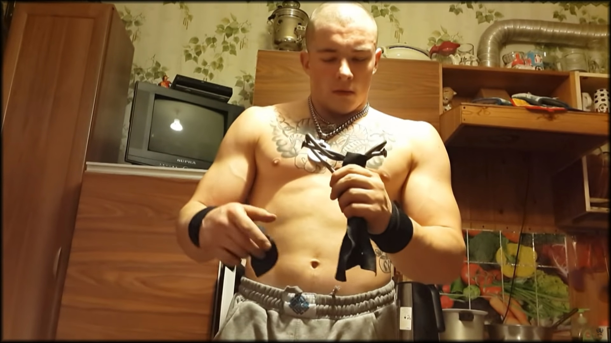
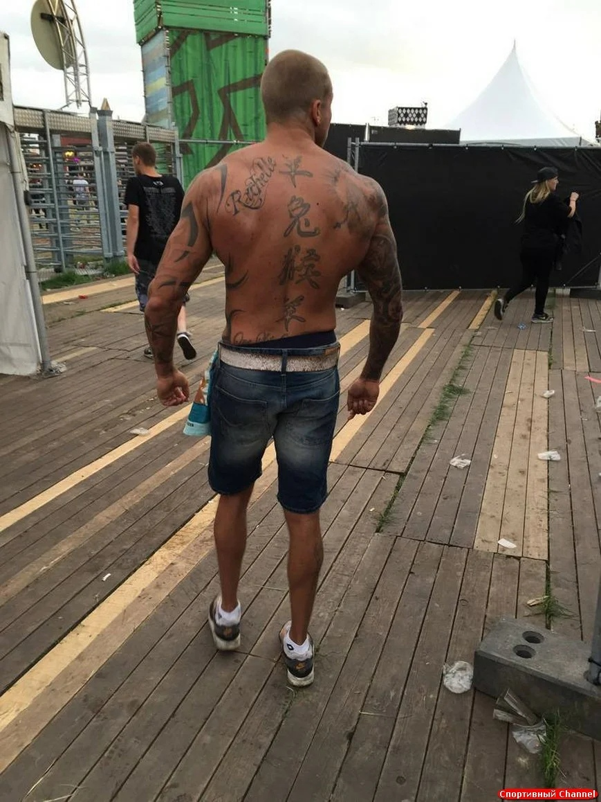

Как я пришёл к силовому тренингу древних атлетов
Часть 3
Однажды, во время моих увлекательных путешествий по просторам ютуба, в мою предложку попало одно из видео Виктора Блуда, которое имело название «Силачи Старой школы на байкерском корпоративе» где парень чуть старше меня, совершал всякие силовые трюки такие как: швунг девушки одной рукой, разрывание календаря, лопание грелки путем надувания и это при том, что он находился на борцовском мосту и на нём сидело две девушки, кроме того он сгибал и ломал огромный железный болт и делал сердце из гвоздя 200мм. Мне вышеуказанные трюки показались интересными, но не более, даже я бы сказал, что считал их лишь «показухой» и всерьез не мог воспринять. Однако, я решил посмотреть остальные его ролики и «залип на несколько дней», в своих видео парень чего только не делал, но я не мог понять крутости этого всего, так как сам не пробовал ничего из того, что он там показывал. Благо, у меня в городе есть хороший строительный магазин, где я накупил гвоздей 200х6мм, и выйдя из него, попытался согнуть один из них – да, у меня получилось и не абы как, а техникой сгибания «реверс»(кому надо, тот поймет) но это было очень тяжело и даже показалось, в голове что-то лопнет от неимоверного усилия. Далее, я вернулся домой и посмотрел то, что делает с этими гвоздями тот парень и моё уважение к его способностям, выросло тысячекратно. Напомню, что слабыми мои руки не были(12 подтягиваний с дополнительным весом 40 кг), но в сравнении с ним - я совсем не занимался. К примеру, человек связывал между собой два гвоздя 300х8мм в фигуру называемую в узких кругах «Узел Сотского», должен сказать, что такой гвоздь я не смог даже просто надогнуть, не говоря о закручивании в узлы, тем более без упора. Я не представлял какая сила и болевой порог может заключаться в его руках. В сгибаниях с упором же, человек сгибал шестигранники которые эквивалентны более чем 6 двухсоткам, (я мог немного надогнуть об колено лишь 3). Если отойти от сгибаний - становая тяга которую я тренировал в легком режиме, на тот момент у меня была в районе 115 или 120 кг, этот же парень поднимал 230 кг. Приседания весом - я тогда не приседал и если начинал, то моя спина начинала ныть и я забрасывал это дело, а этот же парень делал огромное количество упражнений с сумасшедшей осевой нагрузкой и совершенно не боялся за свою поясницу. Чего стоит вытолкнуть одной рукой штангу 90 кг… к слову - это видео всё ещё есть на его ютуб канале. Мне стало обидно, даже появилось ощущение, что я что-то потерял или упустил, я могу лишь подтягиваться, а он может делать всё и на очень приличном уровне и при этом хорошо себя чувствовать, совершенно не боясь, что ему может прострелить спину пока он будет нести на помойку старую тумбочку. Я понял, что атлет должен быть здоровым и разносторонним и так ли это плохо, быть сильнее не занимающегося человека раза так в два или три, заплатив за это лишь несколькими тренировками в неделю, длительностью не более часа?
Продолжение следует...
Как я пришёл к силовому тренингу древних атлетов
Часть 2
В продолжении предыдущего поста, хочется указать, что убрав одно из особенно слабых мест моего организма, «качество жизни» заметно возросло - поясница больше не болела и я смог снова нормально спать, бегать, прыгать (даже с парашютом). Словом, жизнь поменялась в лучшую сторону. Так я и понял, что люди, которые пренебрегают упражнениями на всё тело, а специализируются на чём-то одном – увеличивают риск травматизации отдельных – менее востребованных участков организма. Однако, я понимаю, что именно ими движет, а именно – ошибочное ощущение силы, к примеру: В 2017 году, я мог подтянуться более 12 раз с дополнительным весом в 40 кг, при своём собственном весе 72 кг и ощущал себя «непобедимым титаном». Вот только, к моему великому удивлению – гантель 30 кг, которую я пытался поднять над головой, показалась мне непомерно тяжелой, а штанга - на грифе которой, висело всего-то 50 кг: испортила всю мою технику приседаний и я кое-как встал, трясясь от чрезмерного усилия. К чему это всё? – специализация на чем-то одном, это очень здорово, человек может получить заметно больший прогресс в аспекте силы, однако – здоровья и «качества жизни» это не прибавит, в отличии от возможных проблем. Не лучше ли исключить слабые места в своём теле и выбрать более долгий, но сбалансированный путь к здоровью и даже силе?
Продолжение следует...
Как я пришёл к силовому тренингу древних атлетов
Часть 1
Около семи лет назад, я начал заниматься атлетизмом на спортивной площадке, взяв в основу своих тренировок следующие упражнения: подтягивания, выходы силой, приседания и отжимания. Мой уровень в этих движениях не был высоким, но найдя одну из популярных тогда программ тренировок по направлению "Workout", за 3 месяца к моему худенькому тельцу, которое я мог поднять к перекладине около 8 раз со страшными дёрганиями, прилипло около 20 кг мяса. Да, я стал ощущать себя совсем не так как раньше, мой бицепс уже не был 29 см в обхвате, а приближался к 40 см, спина тоже стала гораздо шире. Однако, я кое-что упустил, в моём организме развилась диспропорция - очень сильный верх спины и совсем слабый низ, из-за чего произошла протрузия и следующие 2 года, я ездил в университет как на казнь(сидеть на заднице из-за страшной боли в спине, я решительно не мог, а надо было учиться и отсиживать 6 пар). Заниматься на турниках я и не думал прекращать, так как постоянный прогресс подбадривал меня, дополнительно - на первом курсе, я пошёл на секцию по скалолазанию, что способствовало укреплению моих рук и без того мощного верха спины. Про тренировки ног, отжимания, уже давно и благополучно забыл.
Примерно так прошло два года, поясница и не думала проходить, мази не помогали, чуть только выходил на улицу — бесконечно продувало.
Многие подумают, к чему столько не нужной инфы и для чего я тут жалуюсь на всеобщее обозрение, но дело в том, что вдумчивые занятия спортом могут привести человека в отличную форму, а бездумные — только сами знаете куда.
Даже несмотря на отличные результаты в подтягиваниях, я ощущал себя старым и разваливающимся дедом, лишний раз я боялся, что электричка резко остановится и я не буду к этому готов — в спину вступит так, что имею все шансы лишиться сознания.
Но, мне повезло, как-то раз наткнулся на видео тренера «Дмитрий Смирнов», где последний рассказывал, как он справился с грыжей и далее поднимал «становую тягу» в 300 кг. На тот момент, в моей голове произошёл взрыв — «становая тяга» против грыжи ? Я её не делал, потому что, где-то в кругах воркаутеров (в то время борящихся в популярности с привычными нам зальными качками), услышал, что она очень сильно вредит спине. Однако, я решил принять во внимание, слова вышеупомянутого тренера, и начал делать «становую тягу» с маленькими весами и идеальной техникой(которую я разучивал не менее месяца). 3 месяца — поясница прошла, да, одна была всё ещё слабой, но по крайней мере начала работать.
Продолжение следует...